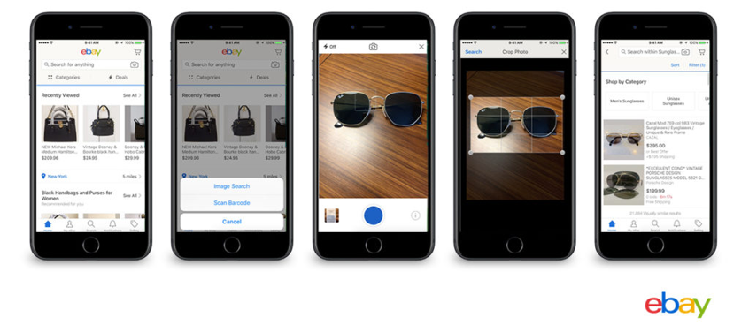

1. Voice Assistants
According to a recent Capgemini Digital Transformation Institute report, consumers are developing a strong preference for interacting with companies via voice assistants. Twenty-four percent of the consumers surveyed said they would rather use a voice assistant than a website for shopping. In the next three years, this figure is thought to rise to 40%. At present, AI is still largely used for streaming music and getting information quickly (two of the biggest uses for Google Assistant). In the near future, we will be able to ask our AI companions to shop for us using verbal commands. The Capgemini report also suggests that over the next few years, more and more people will use voice assistants to buy groceries, household items, and other products online — and even make banking transactions.
2. Personal Shopping Assistants
A lot many people still prefer the walk-in experience because real-world assistants can help them choose a good outfit or find another size. Online shoppers can soon expect virtual assistants who will be as good — or perhaps better — than in-store assistants. The search bar, which is the backbone of most online shopping experiences, will be replaced by these AI-powered assistants.
3. Visual Search Tools
In July of last year, eBay added visual search functions to improve their customer experience, a feature which was already available with both Google and Amazon. eBay’s Image Search enables customers to replace words with images to find a suitable match when looking for something on eBay.
4. Mish-Mash of In-Store and Online
Amazon Go is a great example of this hybrid shopping experience. The tagline “Just Walk Out Shopping” sure caught everyone’s attention in 2016. Amazon integrated a variety of AI (and other) technologies — such as machine learning, RFID, computer vision, and sensor fusion — for the Go stores. The brand-new Amazon Go store in Seattle is already making headlines with its checkout-free shopping model The only thing that you need to have with you is the Amazon Go app before you enter the store. Your Amazon account will be automatically charged for what you take from the 1,800 square-foot mini market. (Of course, there are still some glitches to work out, like accidental shoplifting.)
5. Chatbots
Personalized chatbots are a great way to improve a company’s customer experience for many reasons: serving up relevant content, faster customer service, automated customer service — to name just a few. And today, Topcoder offers cognitive chatbot solution powered by an AI-driven contextual conversation service (using IBM Watson). Ecommerce initially shook brick-and-mortar stores with instant gratification, convenience, and privacy. Now smart self-service options like chatbots are adding another layer to the ease-of-use advantage ecommerce has over traditional in-store operations.

Join the Topcoder Community
Learn about Cognitive technologies and get hands on experience as a member of the Topcoder Cognitive Community.
Crowdsourcing Success
Sept 28, 2017
Join the Topcoder Community
Learn about Cognitive technologies and get hands on experience as a member of the Topcoder Cognitive Community.
Crowdsourcing Success
Sept 28, 2017
Join the Topcoder Community
Learn about Cognitive technologies and get hands on experience as a member of the Topcoder Cognitive Community.
Crowdsourcing Success
Sept 28, 2017